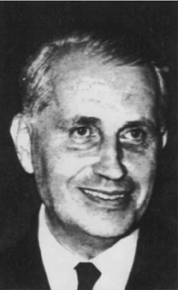

我们已经看到，福柯试图通过写作来逃避任何固定的身份，试图不断地成为另一个人从而不真正成为任何人。我们终归要追问福柯之所以有这种追求的原因，但现在，让我们先来进一步理解福柯的这一计划。
一个惯于怀疑的读者可能会认为，福柯想要通过写作来逃避自我身份的努力不可能成功，因为很明显，选择写作生涯就等同于选择了一个确定而特别的身份：一位作者的身份。事实上，米歇尔·福柯不就是那个生前和死后同样闻名、同样重要的大作家吗？难道这不是他的身份？
对于这种质疑，福柯一篇著名文章的标题可被视为回应，即“作者是什么？”。成为作者是否就意味着拥有一种身份（某种特定的本质、属性、人格），是否就和成为一名英雄、一个撒谎者或者一位恋人一样？写作是否使我成为某一种人？
让我们从“作者”一词的常识性定义入手：作者即写书的人。更准确一点，既然一位作者很可能只写了一些不曾收录出版的诗歌或文章，我们可以把作者定义为写了文本的人。但我们马上意识到这也不尽合适。任何写出的东西都可以叫做文本，包括购物单、课堂上传递的小纸条、回给电话公司查询账单的电子邮件。我们都写过这样的东西，但这并不能使我们成为作者。正如福柯所指出的，即便我们想要收集如尼采这样伟大的作家写的“所有东西”，我们也不会把上述文本包括在作品之列。只有某些文本可以算做一位作家的“作品”。
我们的定义还存在另一个缺陷。某人可能的确写下了一个文本，并且属于恰当的类别，但却不是作者。向秘书口授文本就是一个明显的例子，但还有比这更复杂的情况：例如，某电影明星“在他人的协助下”或者“通过向他人讲述”而完成了一部自传；或者一位政客“写”了一个专栏或发表了一篇演说，而这些稿件都是由幕后的一个助理团完成的；再比如一名科学家是一篇论文的“第一作者”，该论文由他的实验室成员共同完成而他自己事实上只字未写。这些例子都告诉我们，作为作者并非如我们的简单定义所设定的那样，只是某类文本的字面“致因”（生产者）。相反，作为作者实质上意味着被认定为要对文本负责 。福柯指出，不同的文化传统依据不同的标准来明晰此类责任。举例来说，在古时候，所有有一定权威的医学文本都被认定是希波克拉底这样的经典作家的作品。而另一方面，在历史上也有一些时期，文学文本（如诗歌和故事）曾一度佚名流传，不被视为应该确定作者的文本（可与我们文化中的笑话相比较）。
出于这两种考虑——某些类别的作品能够有作者；而某些作品通过明晰责任使某人成为作者——福柯得出这样的结论：严格意义上，我们不该谈论“作者”是谁而只能谈论“作者功能”。作为某文本的作者不只是和该文本存在着事实上的联系（比如从因果关系上导致了该文本的产生）；它还意味着要扮演某种与文本有关的社会和文化角色。作者身份不是一种自然身份，而是一种社会建构，这种建构因文化和历史时期的不同而异。
由此，福柯进一步指出，在某一既定文本中起作用的作者功能和作为文本作者的单个自我（一个人）并不对应。任何一个“由作者创作”的文本都存在着多个自我来共同完成作者功能。因此，在一部以第一人称叙事的小说中，叙事者“我”并不是写下“我”所讲述的故事的人，但这二者都有权宣称自己是“作者”。一个经典的例子就是普鲁斯特的小说《追忆似水年华》，该小说运用了叙事声音“马塞尔”和普鲁斯特“他自己”之间的复杂互动。福柯在一篇数学论文中发现了同样的多重性，论文的前言中出现了感谢丈夫支持的“我”，这个“我”有别于在正文中论证定理、写下“我假设”“我总结”的“我”。当然，肯定有一个人写下了文本的文字，在这个明显的意义上说只有一个单一的作者。然而，身为作者，此人担负了各种不同的角色，从而对应了各式各样的自我身份：“作者功能的效用就在于分散这些……同时存在的自我。”［“作者是什么？”，《福柯主要作品集》（卷一），第216页］
如我们所见，对于福柯这样不想要固定身份的人，作者的角色有一定的吸引力。然而，写作还可以在更深的层次上使“我”远离“自我身份”。为了解释清楚这一点，我们再回到前文关于作者的常识性定义：作者是写了某个文本的人。从上文的分析中，我们已经看到作者身份的复杂性。就连认为作者（无论从哪种意义上去理解）生产了他所写作的文本（导致其存在）这样常识性的理解也有不妥之处。在《事物的秩序》一书中，福柯对这一问题条分缕析。他说，尼采启发我们对于任何文本都要问一个重要的问题：“谁在说话？”（是谁——从哪个历史位置、出于何种利益考虑——在主张被人聆听的权威？）福柯接着说，马拉美的回答是，至少就文学而言：说话的是“文字本身”（《事物的秩序》，第305页）。循着马拉美的思路，我们不禁要问：是否在某种意义上，文本的产生要归功于文字，归功于语言本身，而不是作者？
这种情况当然是存在的。每种语言都包含一种丰富的概念结构，这种结构在语言的每一个节点上规定着我如何言说甚至规定着我说什么。莎士比亚式的英语能够生动地描述鹰猎运动，但是却无法用来解说足球。莎士比亚的剧作之所以对鹰猎运动写得行云流水又复杂逼真，一方面自然是由于莎翁对此运动颇有兴致，另一方面也是由于伊丽莎白时代的英语为描写此类运动提供了丰富的词汇。如果莎士比亚死而复生去观看一场世界杯足球赛中德国队和英国队的对决，尽管他是一个大作家，也会觉得极难对看到的比赛作出准确的描述。我们对足球的描述要远胜过莎士比亚：不是因为我们有更高的文学禀赋，而是因为我们掌握了这样的语言。
但是，你或许会说，这是一个特例，只是由于莎士比亚时代没有足球运动而已；只要给伊丽莎白时代的英文增加一些描述足球运动的词语，问题就迎刃而解了。的确如此，但首先要注意的是，我们能够在实际中使用的任何语言都处在其历史演进过程中的某一个特定点上，因此都会有局限性。其次，还有一种可能的情况，即任何语言都可能存在结构上的根本局限，这种局限使得该语言无法进行某些类型的表述。这种情况似乎确实存在——举例来说，歌德和里尔克的德语作品中的一些表达很难找到精准的英文翻译。海德格尔甚至说——尽管不清楚他这样的结论从何而来——只有用古希腊语和德语才能充分讨论哲学问题。
相应地，作者们写作时所说的在很大程度上并非源自他们独特的见解或才能，而是他们所用的语言的产物。在文本中，多半时间只是语言在说话。作者们对此会有各式各样的反应。一种通行的（也是浪漫主义的）观点认为，作者们是在努力对抗语言的强制结构以表达自己独一无二的个人洞见。这种观点有一个假设，即作者能够拥有一种个人的、前语言的见解，要表述这种见解就必须同语言约定俗成的言说倾向作战。另一种相反的“古典主义的”看法认为，作者是在接受并运用标准结构来完成暗含了一种传统见解的新作品。无论是浪漫主义的观点，还是古典主义的看法，二者都将当前的写作看成是个人正在表达 自我；他们的不同之处仅在于，表达的内容是作者自己的个人观点还是作者对传统观点的征用。但是，福柯尤其感兴趣的是另外一种作者能同语言发生联系的模式，在这一模式中，关键所在不是用语言来表达自我，而是用语言来消弭自我。
与这种作者身份对应的是和“作者之死”相关联的一种文学现代主义——尽管从上文的讨论可知，这种“死亡”实质上只是作者作为自我表述者这一概念的死亡。替代“作者之死”的观点是，作者是让语言展现自我的工具。这一观点在《作者是什么？》一文中并不突出，反而在此后福柯的一些论著中得到了彰显。例如，在《事物的秩序》中，福柯说：“我们现在最感好奇的问题是：什么是语言，我们如何找到一种外围的方法使语言利用自身显现出来而同时又不失其丰富性？”（《事物的秩序》，第306页）
在福柯入选法兰西学院的就职演说中，这一观念非常显著（该演说法文标题是L'ordre du discourse，却被英译做“论语言” [1] ）。在这场应邀而作的公开演讲中，我们能感觉到福柯个人对这一主题的强烈共鸣：他开篇就说，“我真希望自己可以在不知不觉中就开始这次演讲……我更愿意自己被话语所包裹……在说话的此刻，我但愿听到一个不知名的声音，这种声音先于我很久而存在，让我只是陷在这种声音里……（《论语言》，第215页）。”福柯将自己联想成如贝克特剧中人物莫洛伊般的现代主义声音：“我必须继续；我不能继续；我必须继续；只要还有话，我就必须说，我必须说话直到这些话找到我，直到它们说了我……”（塞缪尔·贝克特，《无名者》，引自《论语言》，第215页）在后来的演讲中福柯还声称，一种观点认为作者就是“贯穿一组文章或叙述的原则，是作品意义的源头以及作品之间连贯性的基础”，该观点与其说是创造性表述的根源倒不如说是一种关于限制的原则，因为在其影响之下，我们被迫要按照某个作者的全盘筹划来阅读文本。最后，福柯巧妙地把这番理论游思引入当下的场合，他说他所期望的声音，“那个先于我、支持我、引导我讲这些话又暂存在我的演说中”（《论语言》，第221页）的声音其实就是让·伊波利特，他所尊崇的老师，也是他在法兰西学院哲学系所任主任一职的前任（《论语言》，第237页）。对福柯而言，有一点是肯定的，即语言能够而且必须带着我们突破主体的甚至多主体的表达模式。

图3 乔治·巴塔耶
然而，在何种意义上语言能够为我们提供一种超乎主体性自我的真实？不容忽视的一个事实是，语言通过一些可以说与我们靠得过近因而不易觉察的结构打造了我们日常存在的基本框架。继20世纪50年代和60年代维特根斯坦的影响之后，英语语境中的日常语言哲学提出了一种揭示这种语言“无意识”的途径。而福柯在20世纪60年代提出的“知识考古学”则是一种更偏重历史的方法。我们现在所循的这条福柯思想的线索与作为日常生活之潜层结构的语言无关。福柯在此所感兴趣的毋宁是对语言施加极端压力的写作，这类写作以悖论将语言推向极限，从而造成种种违规和越界体验。
乔治·巴塔耶的写作就是此类写作的范例，福柯曾针对巴塔耶的作品写了篇激情洋溢但较为晦涩的文章——《写在越界之前》。性爱——巴塔耶那些充满暴力的色情小说的基本主题——是一个首要的越界区域，因为它关乎我们所有的极限体验（“极限体验”是福柯指代越界体验的用语，泛指那些使我们超越了智性思考和礼节约束的体验）。把意识推向极致自然导致无意识，而受弗洛伊德影响，我们都知道无意识正是一片混沌的性欲的旋涡。乱伦普遍被视为禁忌，这体现了人类社会律法的界限所在，而那些（用福柯的话来说）表明了“语言能够在沉默的沙地上前行多远”的极限语言［“写在越界之前”，《福柯主要作品集》（卷二），第70页］，当然总是以性爱的“禁忌词汇”为标志。
当然，色情写作通常是一种相当传统的媒介，一些陈词滥调，充满激发性欲的色情联想却没有提供新的体验或思考模式。巴塔耶的色情小说与其说能激发性欲，倒不如说通过一些极端的形象使人震惊、令人厌恶、让人头晕目眩，加之写作文笔平静清晰，让人感到更加不安。巴塔耶身处的后尼采世界所隐含的悖论则进一步加强了这种不安。在这样的世界里，上帝死了，这就意味着已经不存在任何思想或行为的客观界限供我们去自我评判。“在一个不再承认任何神圣事物的积极意义的世界里亵渎神灵——这是不是有点像我们所称的越界行为？”我们知道了那些限制是由我们自己设定的，因此超越它们（越界）只能意味着对自己的反叛，借由“一种空洞的、转而向内的渎神，其介质只是在互相之间发生作用而没有任何外在的目标”［《福柯主要作品集》（卷二），第70页］。通过对逻辑法则的公然违抗，这种努力的荒谬性本身又强化了极限体验。
这种极端主义的操练，意义在于释放语言中驱使我们感受日常概念和日常经验之极限的力量，由此让我们得以（或许是转化性地）瞥见全新的思维方式。在这整个过程中，作者巴塔耶却无法宣称自己从另一个世界获得了任何不够理性或极其理性的洞见（毕竟，在现实生活中，他是一个俗务缠身的人：他是法国国家图书馆的馆长）。但他的作品却试图释放语言中新的越界性真实，这些真实带着他和读者一起超越原有的知识领域和表达空间。
然而，巴塔耶的色情暴力远非为语言自身的言说创造空间的唯一途径。巴塔耶的文字从过多的主体性中溢出，源自臻于极端的色情幻想。与此不同，莫里斯·布朗肖的写作闪烁着一种奇特性，这种奇特性似乎来源于对所有主体性的完全抽离。依福柯的解读，布朗肖是描摹“外在思想”的大师，就像在巴塔耶的作品中一样，这思想（甚至是体验）涵涉了“哲学主体性的消解及其在语言中的弥散，这种语言先是驱逐了它，而后又在它的缺席所留下的空间之内使它不断衍生”［“写在越界之前”，《福柯主要作品集》（卷二），第79页］。福柯对这一经验进行追溯，从萨德、荷尔德林经过尼采和马拉美到阿尔托、巴塔耶和克罗索夫斯基，再到集大成者布朗肖。福柯认为，布朗肖“可能不仅只是这种思想的又一个见证人”，原因在于，那些先驱们表达这种外在思想的途径，无非是以各种方式将语言与作为其根源的神的意志或人的意识相分离，而布朗肖则完全从他的文本中撤离，以至于“对我们而言，他就是那种思想本身——是它真实的、绝对遥远的、闪烁其间又不可见的存在，是它不可避免的宿命、不能逃避的律法，是它平静、无限又适度的力量”［“外在的思想”，《福柯主要作品集》（卷二），第151页］。可以说，对应于巴塔耶小说中迷狂式的侵犯，布朗肖的作品采用了一种禁欲式的退隐。在极限体验的诸多悖论中，二者是等同的，因为在两种写作风格中——尽管福柯可能更强调布朗肖的作品——处于中心和支配位置的主体都被语言自身所取代。这种语言不是意识的载体或表达形式，而是“一种专注又健忘的存在形式，以它善于掩饰的能力来抹去任何确定的意思乃至抹去说话者的存在”［《福柯主要作品集》（卷二），第168页］。
越界、悖论、主体性的消解，这些都在疯癫自身以及那些精神崩溃的终极性极限体验中整合交会。在后文中，我们还会讨论福柯关于疯癫的意义深远、引人深思的分析。但现在看来不足为奇的是，福柯会对尼采、阿尔托、雷蒙·鲁塞尔之类“发疯的”作家的作品产生浓厚的兴趣（这些作家生前都曾被诊断为失去理智）。福柯强调说，即便在这些例子中，这些作家的成就严格来说也绝非一个疯子的成就。他提醒我们注意，“疯狂正是艺术作品的缺席”（《疯癫与文明》，第287页）。完全意义上的疯癫无法产生有意义的作品，正如我们不会将尼采最后从都林寄出的明信片（署名为“耶稣”、“狄俄尼索斯”）列入他的作品。这些“发疯的”作家们之所以有独特的优势、怀有特殊的兴趣，主要是由于他们处在理智世界的边缘这样的阈限位置。他们的写作在连贯性和非连贯性之间的模糊地带展开，他们的精神“躁动”导致了巴塔耶和布朗肖有意为之的越界和退隐。在前面第一章中，我们看到鲁塞尔通过使用一些随意的限制法则怎样为写作开拓了新路，使写作不再受表达作者思想这样的意愿驱使，从而开辟了一个语言结构可以不受牵引而自然展开的领域。受鲁塞尔影响，一些别的作家——尤其是乌利波派 [2] 的雷蒙·凯诺、乔治·珀雷克、伊塔洛·卡尔维诺以及哈里·马修等作家——对其写法纷纷仿效。最著名的例子就是乔治·珀雷克的《消失》（La disparition），该小说用法文写出，全文没有出现一个字母“e”。
福柯对先锋派文学的迷恋体现了他力图从极限体验之中、在一般存在之外寻求一种真实性与满足感的愿望。正如他在一次谈话中所说（这次谈话距他去世只有两年的时间）：
［“米歇尔·福柯：和斯蒂芬·里金斯的谈话”，《福柯主要作品集》（卷一），第129页］
然而，虽然这种强度对作为个人的福柯一直有巨大的吸引力，但在20世纪60年代以后（当他的大多数文学研究论文都已经写就之后），福柯似乎越来越不确定这种极限体验以及激发这种极限体验的文学是否是促进社会变革的关键所在。相反，就如何实现人的解放，福柯逐渐形成了一套政治观念。下一章，我们将沿着这条线索讨论福柯的思想。